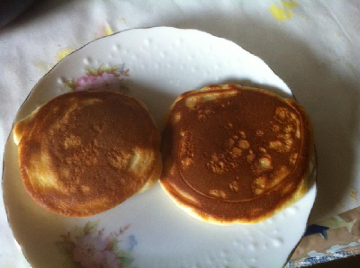

Pancake

Description
Every home cook needs a good buttermilk pancake recipe in their repertoire.Pancakes are light, fluffy, moist, and full of rich flavor. .
People really love pancake.
Ingredients
- 2 cups all-purpose flour
- 2 cups white sugar
- pinch of salt
- 2 teaspoons baking soda
- 1 teaspoon baking powder
- Buttermilk
- 1 cup milk
- 2 eggs
- 1 teaspoon vanilla extract
- Butter
Steps
- Mix Dry Ingredients: Combine flour, sugar, baking powder, baking soda, and salt in a large bowl.
- Mix Wet Ingredients: Beat the buttermilk, milk, eggs, and melted butter together in a separate bowl. Do not combine the wet and dry ingredients until right before you cook the pancakes.
- Make the Pancakes: Add the wet ingredients to the dry ingredients and mix with a wooden spoon or fork until the mixtures are just-blended. Scoop the batter onto a hot, oiled griddle and cook until the pancake is bubbly on the top. Flip with a spatula and cook until both sides are brown.
recipe: https://www.allrecipes.com, Cover Picture: Shima Apu